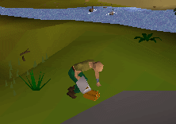
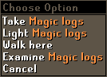

Firemaking Skill Guide
|
Making a fire is useful for cooking food without having to go and find a range.
To make a fire, left-click on the tinderbox in your inventory so that it is outlined in white, then left-click on the logs to use them with the tinderbox. You will then place the logs on the ground and attempt to light the fire. |
 |
 |
Alternatively, you can drop the logs on the ground and right-click the logs then select 'Light logs'. Your chances of lighting the fire quickly, will depend on your firemaking level. |
Tinderboxes can be bought from General Stores. Occasionally, so can logs if other players have sold them to the stores. However, for a more reliable way to secure logs, please refer to the woodcutting section of the manual.
The following table shows what wood types are available in RuneScape, as well as the level required to light them and the experience gained from doing so.
| Wood Type | Level req'd |
Exp gained |
Members Only? |
|---|---|---|---|
| 1 | 40 | No | |
| 1 | 40 | Yes | |
| 15 | 60 | No | |
| 30 | 90 | No | |
| 45 | 135 | No* | |
| 60 | 202.5 | No | |
| 75 | 303.8 | Yes |